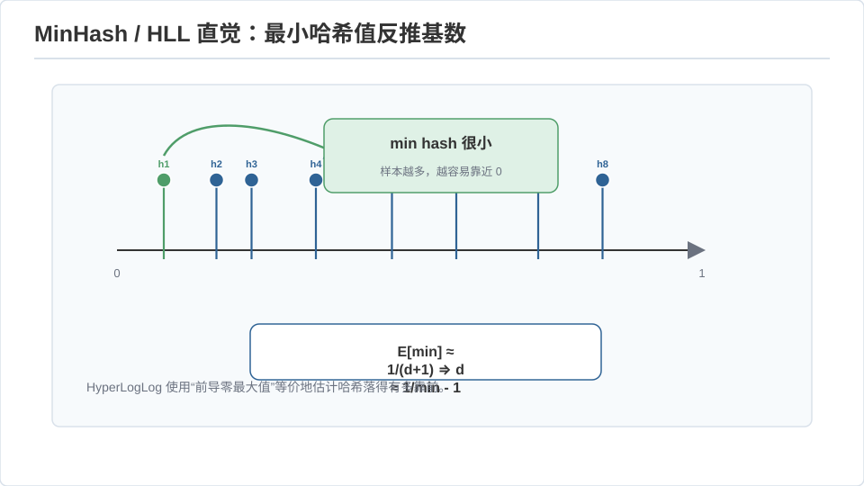
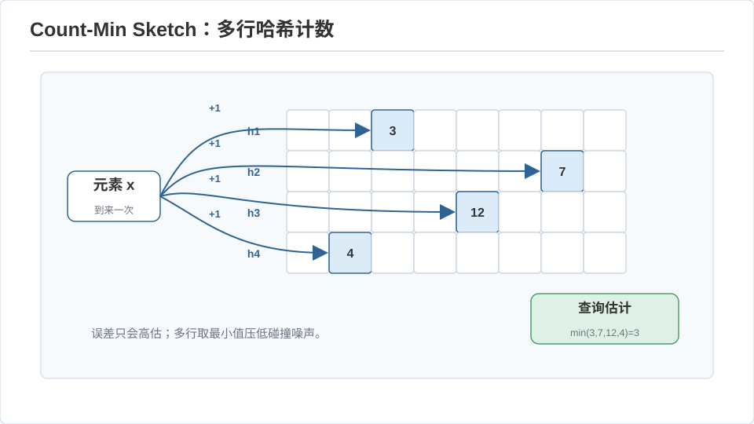
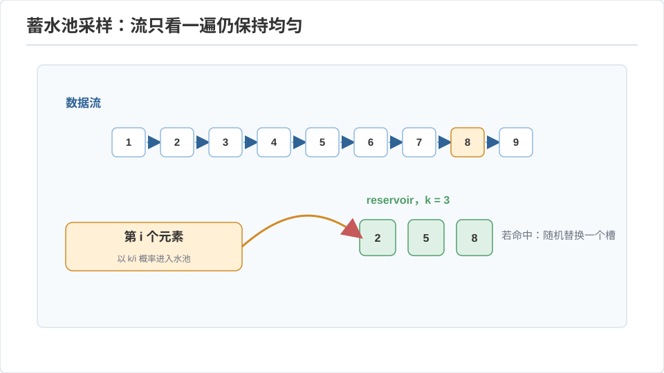

高级算法 I · 流算法与草图
对标：MIT 6.854 / CMU 15-859 / Amazon–Cormode 综述 ｜ 前置：algo-03（随机化）、数学站概率线（矩、集中）、信息论线 现代数据的现实：数据流过一次就没了，且大到存不下（网络包、日志、点击流）。流算法的约束是苛刻的——一遍扫描、亚线性空间（远小于 \(n\)）——却仍能给出可证明精度的近似。这条线是"用随机性和信息论换空间"的极致，也是 Medusa 这类持续摄入数据系统的底层直觉。
1. 模型与不可能性
数据流模型：元素 \(a_1,a_2,\dots,a_m\) 依次到达（可能是 \([n]\) 上的更新），算法只有 \(O(\text{polylog})\) 空间、每元素 \(O(1)\)~\(O(\text{polylog})\) 处理时间，不能回看。目标：估计流的某个统计量。
先立不可能性（信息论下界，🔗 信息论线）：精确求"出现次数最多的元素"（众数）在一遍 + 亚线性空间下不可能——用通信复杂度归约（Index 问题）可证。所以流算法的一切成就都是"近似 + 高概率"，这不是偷懒，是被信息论逼出来的最优。
2. 三个基石草图
① 计数不同元素（\(F_0\)，distinct count）——HyperLogLog
问题：流里有多少个不同值？精确要 \(O(n)\) 空间。思想：随机哈希每个元素到 \([0,1]\)，最小值的期望 \(\approx 1/(d+1)\)（\(d\) = 不同元素数）——由最小哈希值反推 \(d\)。方差大 ⇒ 用多个哈希 / 分桶取调和平均（HyperLogLog 的精髓）：用 1.5 KB 估计上亿基数、误差约 2%。Redis 的 PFCOUNT、数据库的 APPROX_COUNT_DISTINCT 都是它。

② 频率估计（重击手）——Count-Min Sketch【推导级】 问题：估计任意元素的出现频率 \(f_x\)。结构：\(d\) 个哈希函数 × \(w\) 列的计数矩阵。更新 \(x\)：每行 \(h_i(x)\) 处 +1。查询：取 \(d\) 行对应计数的最小值 \(\hat f_x = \min_i C[i, h_i(x)]\)。 分析：\(\hat f_x \ge f_x\)（只会因碰撞高估）。单行期望超出 \(E[\hat f_x - f_x]\le m/w\)（其他元素均匀撒进 \(w\) 列）；由 Markov，单行超出 \(\epsilon m\) 的概率 \(\le 1/(\epsilon w)\)；\(d\) 行取最小 ⇒ 全超出的概率 \(\le (1/(\epsilon w))^d\)。取 \(w=e/\epsilon, d=\ln(1/\delta)\)：以 \(1-\delta\) 概率误差 \(\le\epsilon m\)，空间 \(O(\frac1\epsilon\log\frac1\delta)\)。\(\blacksquare\) 这就是"用固定小表估计海量键频率"的工业标准（Medusa 若要在线统计实体热度而不建全表，正是它）。

③ 频率矩（\(F_2\)）——AMS 草图 \(F_2 = \sum_x f_x^2\)（衡量分布集中度、与 self-join 大小、方差相关）。思想：给每个元素随机 \(\pm1\) 符号 \(s(x)\)，维护 \(Z=\sum_i s(a_i)\)。则 \(E[Z^2] = F_2\)（交叉项因符号独立期望为零）——一个随机投影就无偏估计了平方和。多份取平均降方差。这是 Johnson–Lindenstrauss 降维在流上的化身：随机投影保持 \(\ell_2\) 范数。
3. 统一视角：草图 = 线性投影 + 集中
三个草图的共同骨架：把高维频率向量 \(f\in\mathbb R^n\) 用一个随机线性映射 \(\Pi\) 压成低维 \(\Pi f\)，在低维回答关于 \(f\) 的问题。线性带来一个珍贵性质——可合并（mergeable）：两个流的草图直接相加就是合并流的草图。这使草图天然适配分布式：各机器各自 sketch、汇总时相加（🔗 dist 线的聚合、MapReduce 的 combiner）。
读法：流算法 = 随机投影（线代）+ 集中不等式（概率）+ 通信下界（信息论）三门数学的合流。你三门都有，这条线读起来会很顺。
4. 采样与滑动窗口
- 蓄水池采样（reservoir）：从未知长度的流里等概率抽 \(k\) 个样本——第 \(i\) 个元素以 \(k/i\) 概率替换已选。一行归纳证明每个元素最终留存概率 \(=k/m\)，经典漂亮。
- 滑动窗口：只统计最近 \(W\) 个元素（旧的要过期）——指数直方图（Datar–Gionis–Indyk）在 \(O(\frac1\epsilon\log^2 W)\) 空间内近似窗口内计数。实时监控、限流器的理论底座。

5. 练习与要点
例 1（HLL 直觉） 若你哈希 \(d\) 个不同元素到 \([0,1]\)，最小值期望 \(\frac{1}{d+1}\)——反过来观测到最小值 \(0.001\) 时估计 \(d\approx 1000\)。手算这个反推，再想"为什么要分桶取调和平均"（答：单个最小值方差极大，等价于只用一个样本估计指数分布的率）。
例 2（Count-Min 只高估） 证明 Count-Min 永不低估：每次碰撞只增不减，取最小是为了"选碰撞最少的那行"——误差单边性让它特别适合"找重击手"（只怕漏不怕多算）。
例 3（可合并性） 两台 Win/Mac 各处理一半日志、各建 Count-Min，主机把两个矩阵逐格相加得到全局草图——验证这等于在合并流上直接建的草图。这就是分布式聚合为什么偏爱线性草图。\(\blacksquare\)
下一页：高级算法 II——谱图论（把图交给特征值）与在线算法（不知未来如何决策）。